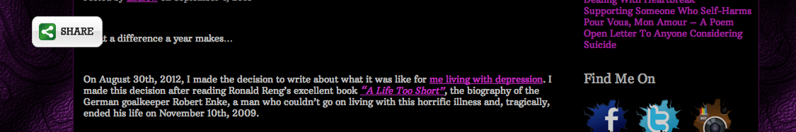

Share buttons and your readers
We all know them. We all hate them for various reasons. But they will not go away and there are good reasons why they stick around. I am talking about those little buttons you see on many blog posts or news sites these days. Buttons to quickly share an article via many different social media sites. The problem is not that they exist or that people use them. The problem is that people most of the time do not understand the consequences and implementations. Let us talk about some things we should consider best practice.
Before we start with the implementation we should talk about the reasons for those buttons. Do they really increase shares, likes, pins and whatever else it is called? If you ask someone wit the letters S, E and O on his business card the answer will be "yes". I tried having a Twitter button below my posts and they were shared a lot more than without one. Does this prove anything? No. This is one blog with tech-savvy readers. The only thing you could state is that my readers seem to be lazy when it comes to sharing content. If it is just one click away they were more likely to do it than now.
If you include one is entirely up to you. But please do it "right" (™). Yes, there is a right way to implement it. There is also a "a little bit less right" way, but this one is a lot easier.
A last note: I assume you care about your users and readers. If this is not the case just stop reading, you will waste your time.
Why you should care
I had a link in my Twitter timeline and wanted to read it. What did I see? Text. Good so far, as I was prepared to read something. What I was not prepared for was the fact that after some time a JavaScript will be done downloading and rendering and displays a button right in the middle of the viewport (which is not endless on a smartphone).

Now you can start arguing that mobile users are a minority. This could be true for your blog, today, but I would not take bets that it stays this way. But the sad truth is that most of those sharing plugins are just entirely broken. Even bigger screens (not just slightly bigger as in tablet but bigger as in laptop or desktop screen) show the same thing: The button is rendered in the middle of the content.
While this can be a minor annoyance on bigger screens it just plainly sucks on smaller ones. No matter how big the screen actually is I always find it irritating if there is something rendered in the middle of the content I want to read.
The right way
Guillermo Garron wrote an easy to follow article about the right way. The idea is pretty simple: Instead of including a JavaScript from a 3rd party you just add a link which opens the sharing form in the browser. You will not have the numbers how often an item was shared but since they are (most of the time) inaccurate anyway, it would not be a big deal for me.
'Why is this the right way?' you may ask. Excellent question. This way you do not include 3rd party JavaScripts in your site. You are not automatically giving the data of users visiting your site away to Twitter, Facebook and whoever else you include. It is not much, but it is a start to prevent the senseless data collecting going on.
Another advantage is that your site could load a bit faster. No additional JavaScript to be downloaded and rendered. No dependency on 3rd party servers which could be broken and not respond, blocking a connection. I know this is unlikely for those providers but history shows that it can happen.
The not so right way
I am aware of the fact that not everyone is willing to edit the template. Especially if one has never written one line of HTML and CSS. One way is to depend on 3rd party libraries. You still hand over your users data to someone but at least you can make sure your users can read your content without any annoying buttons popping up in the middle of the screen.
Smashing Magazine has a list of some popular solutions with Wordpress integration. I am aware that there are other publishing platforms than Wordpress but it powers a fair share of the Internet and is a good example. Some of them also work on other platforms.
Sociable, Shareaholic and Sharebar do a decent job. I would suggest putting the share buttons at the end of your article. It is unlikely that users share your post before they have read it. At least I am not aware of a user who ever thought "wow, this article sucks but look at this sentence! Thank god there is a share button so I can share exactly this sentence right now, even if I will not read the rest of the article!".
So seriously, there are not many reasons for sharing icons who are always on the screen. If you have thousands of comments and people read those before sharing it can be a viable option. But I doubt this is the norm.
It does not really matter
Most of the time users will not care about the small details I talked about. But what many notice is if they can read the content you published, which took time and effort, or if parts of it are always overlapped by some social media icons which distract the reading experience. They care, if they can just read text or always have to scroll a bit more up or downwards to find the spot were the paragraph they want to read is not covered.
You can share this post on Twitter or discuss it on HackerNews.
I would love to talk to you about this post, your ideas or awesome projects.
I am @fallenhitokiri on Twitter and GitHub or you can send me a mail.